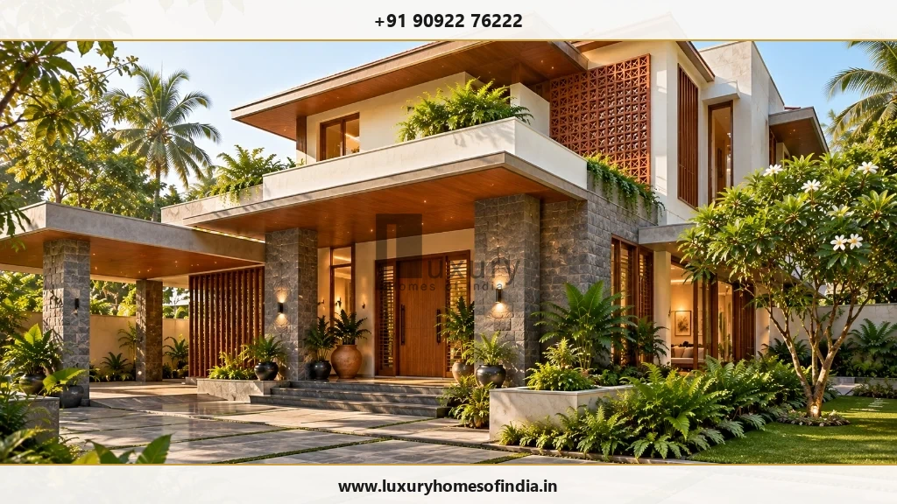
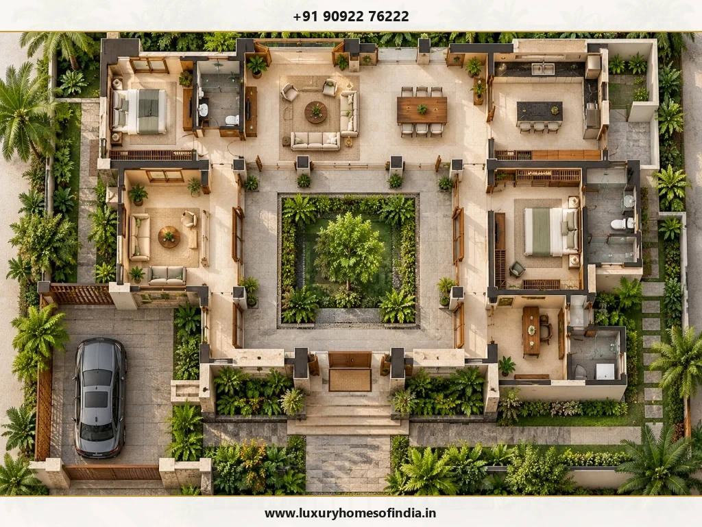
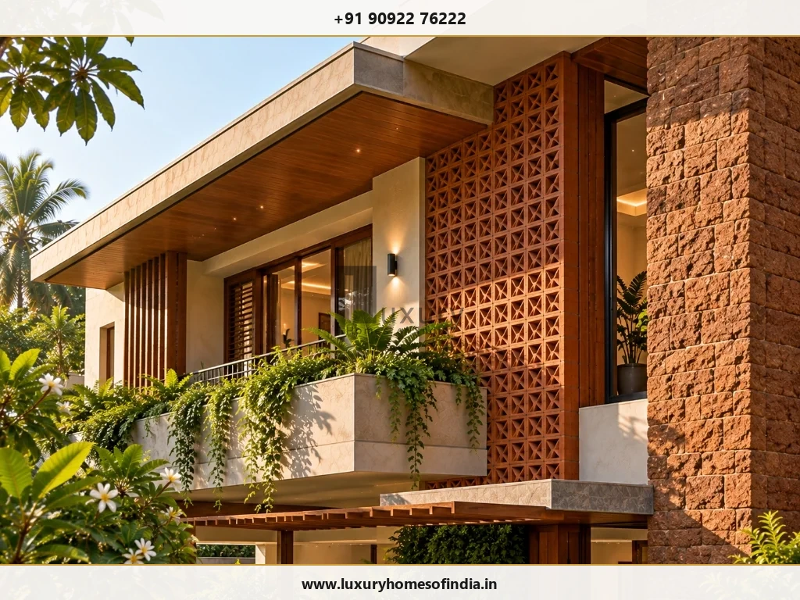

Luxury House Design in Chennai
Beautiful spaces. A personal identity. A home designed around the way you live.
Executive Summary
Luxury house design begins with the relationship between architectural form, spatial floor plans, and everyday lifestyle comfort. In Chennai, a well-resolved design integrates climate-responsive façade shading, courtyard daylighting, structural engineering, and interior finishes into one cohesive architectural plan before construction begins.

A Home Designed Around the Way You Live
A luxury house should feel considered from the moment you arrive. Its proportions, material selections, and spatial flow must work together, creating a residence that looks distinctive while effortlessly supporting daily routines. An elegant elevation matters—but so do the privacy of a bedroom, the functionality of a kitchen, and the way daylight moves through living spaces.
At Luxury Homes of India (LHI), our design process begins with your family brief, plot characteristics, and lifestyle priorities. A well-resolved design expresses your personal identity while resolving the practical engineering decisions that shape everyday living.
Discover the Design Direction That Feels Right for You
Luxury does not belong to a single architectural style. The right direction depends on your plot orientation, family structure, and personal aesthetic preferences:
- Contemporary & Understated: Balanced proportions, carefully positioned window openings, and a restrained natural material palette. Character comes from geometry, spatial volume, and refined material transitions.
- Courtyard-Centred Living: A central courtyard creates a private, light-filled focal point connecting living and dining areas. Courtyard sizing, solar shading, drainage, and planting are planned together.
- Warm, Material-Led Design: Rich natural textures—granite, terracotta, teak, and slate—bring warmth to modern architecture while providing long-term weather durability.
- Open, Connected Spaces: Seamless flow between living rooms, dining spaces, and outdoor verandas while maintaining acoustic privacy for bedrooms and study zones.
A Luxury House Begins With a Strong Layout
The floor plan dictates how your home functions every day. Before refining exterior elevations, establish how rooms connect, what each space accommodates, and where privacy is paramount:
- Entrance Foyer: A welcoming transition into the home with secure coat storage and privacy from guest areas.
- Family & Entertaining Zones: Distinct formal reception spaces and private family living rooms.
- Kitchen & Service Hub: Wet and dry kitchens, utility rooms, and pantry storage planned together.
- Ground-Floor Accommodation: Elderly-friendly suites with non-slip flooring and step-free access.
- Specialized Rooms: Dedicated spaces for home offices, fitness, media rooms, or creative pursuits.
- Courtyard & Verandah Links: Direct connection to private gardens and shaded outdoor seating.
More floor area does not automatically create a better home. Well-resolved spatial relationships and daylighting matter far more. Explore our guide on luxury home planning in Chennai.

Elevation Design That Belongs to the Home
A façade should express the building behind it—not function as a disconnected decorative mask. Windows, balconies, screens, and materials must relate directly to internal room layouts and solar orientation:
| Design Element | Key Architectural Evaluation Parameters |
|---|---|
| Building Proportions | Balance between massing volumes, floor heights, and overall site scale. |
| Window Openings | Daylight harvesting, sightline privacy, view framing, and solar heat gain control. |
| Material Palette | Consistency across elevations, coastal exposure resistance, and maintenance needs. |
| Entrance Experience | Visual prominence, weather shelter, portico scale, and arrival lighting. |
| Balconies & Terraces | Usable depth, monsoon drainage falls, glass/metal rail safety, and sun shading. |
| Architectural Lighting | Concealed wall washing, accent lighting coordination, and fixture weatherproofing. |
| Façade Detailing | Precision material junctions, drip grooves, flashing fixings, and stone joinery. |

Bring Architecture and Interiors Into the Same Conversation
A beautiful room depends on more than surface finishes. Furniture dimensions affect movement pathways. Lighting must respond to room usage. Kitchen and bathroom layouts depend on plumbing stacks. Joinery needs precise dimensions and electrical coordination.
Discuss the following during space planning:
- Furniture layouts before finalizing room dimensions and window heights.
- Kitchen workflows and appliance locations during architectural drafting.
- Architectural lighting circuits alongside false ceiling and interior designs.
- Material transitions (marble to wood) between connected rooms.
- Home automation conduits and electrical socket placements.
Design for Comfort in Chennai's Climate
A luxury home should respond to its actual site conditions rather than simply copying a reference photo:
- Daylight & Shading: Orient major rooms North/East. Integrate deep roof overhangs, timber louvers, low-E glazing, and terracotta jaali screens to reduce glare and air conditioning loads.
- Plot Privacy: Position openings carefully relative to neighboring buildings and road frontages.
- Water Management: Coordinate roof drainage slopes, terrace downpipes, subterranean sumps, and wet-area waterproofing to withstand North-East monsoons.
- Coastal Material Selection: Use SS-316 grade external metalwork, non-porous granite, sealed stone, and anti-corrosive coatings for plots near ECR or Besant Nagar.
LHI offers comprehensive architectural design, structural engineering, turnkey construction, and luxury interior execution. Learn more in our guides to modern luxury home design and turnkey luxury home construction.
Your House-Design Journey
- Understand Your Vision: Share plot details, lifestyle needs, space targets, reference photos, and budget priorities.
- Develop the Plan: Review floor plan layouts, room flow, privacy, and indoor-outdoor connections.
- Refine Architectural Identity: Finalize 3D exterior elevations, window openings, and material palettes.
- Coordinate Technical Requirements: Align structural calculations, MEP ducting, interior joinery, and execution specifications.
Let's Design a House With a Clear Sense of Identity
Bring your ideas and the practical requirements behind them to Luxury Homes of India. Speak with our team about a home that connects elegant design with thoughtful planning and a clear path to construction.
Call +91 90922 76222 Discuss Your House Design